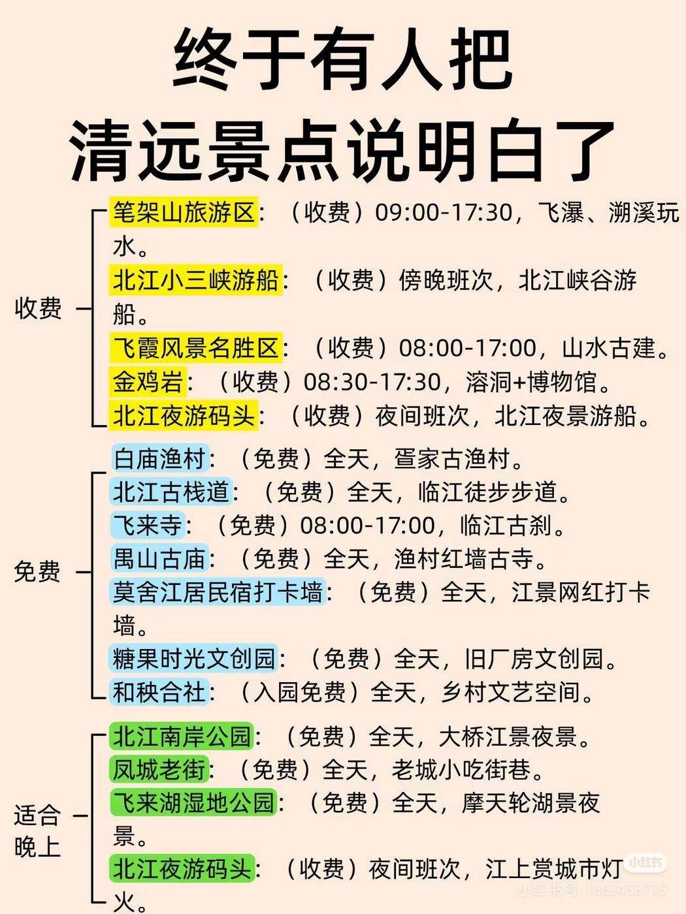
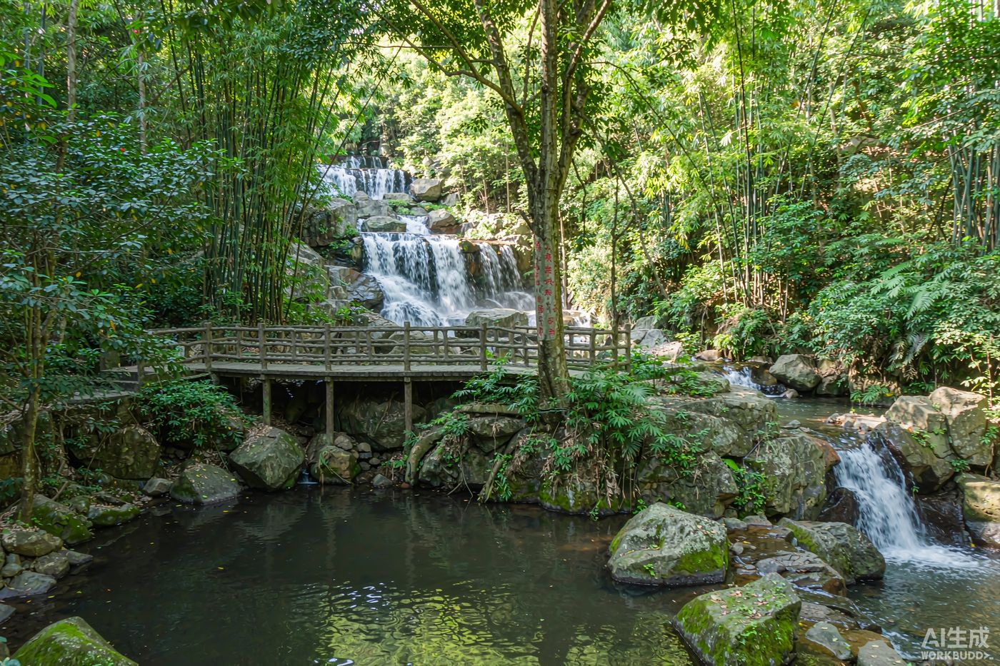

i一、为什么国庆去清远？
清远位于广东中北部、北江中游，是粤港澳大湾区"一小时生活圈"的生态后花园，素有"中国漂流之乡""中国温泉之城""珠三角后花园"之称。全市有 1 个 5A（连州地下河）+ 20 个 4A 级景区，山水、溶洞、峰林、温泉、瑶乡一应俱全。
国庆适配点：
- 10 月是英西峰林秋色（稻浪金黄）最佳观赏期，秋高气爽宜徒步；
- 秋日天高云淡，白天徒步峰林森林、傍晚北江边散步最舒服；
- 广州/东莞出发 1–2 小时直达，国庆 10/1–10/7 高速免费，适合短途度假。
⚠️ 国庆预警：温泉、长隆、地下河等热门景区为爆款，务必提前 3–7 天订房、买票、预约；自驾热门景区周边易拥堵，建议 9:00 前到、错峰用餐。
★清远景点清单速览（收费 / 免费 / 适合晚上）
一张图看懂清远主要景点的收费情况、开放时间与玩法，方便你自由搭配行程、增减停留点。

📋 清远景点清单 · 收费 / 免费 / 适合晚上（图源：网络公开整理）
1二、推荐主线 · 经典山水三日（森林+峰林+溶洞）
适合：情侣 / 朋友 / 第一次来清远。节奏适中，每天一个主题，少折返。
Day 1 · 清城牛鱼嘴原始森林徒步
→ 飞霞山·北江夜游
→ 白切清远鸡
住：清城市区
Day 2 · 英德市英西峰林走廊徒步骑行
→ 九龙豆腐宴
→ 英德红茶庄园
住：英西/英德民宿
Day 3 · 连州市连州地下河乘船探秘
→ 湟川三峡画廊游船
→ 返程
购：东陂腊味/英红九号
💡 进阶：若想打卡瑶乡，可把 Day 3 换成「连州地下河 + 千年瑶寨（连南）」。
♥情侣出游 · 备选路线灵感
上面的主线偏"经典打卡"；若你们更想轻松、浪漫、多拍照，可从下面几条里挑一条，或与主线混搭。以下景点多集中在清城市区与北江两岸，往返不用奔波。
① 北江浪漫一日
- 上午：飞霞风景名胜区（山水古建，缆车/游船瞰江）
- 下午：北江小三峡游船（傍晚班次最出片）
- 傍晚：白庙渔村 吃北江河鲜
- 晚上：北江南岸公园 看大桥夜景 → 北江夜游码头 乘船赏灯火
② 免费文艺打卡线
- 糖果时光文创园（旧厂房文艺）
- 和秧公社（乡村文艺空间）
- 莫舍江居民宿打卡墙（江景网红墙）
- 北江古栈道 临江散步 → 凤城老街 觅食
- 夜：飞来湖湿地公园（摩天轮湖景）
③ 祈福静心线
- 飞来寺（临江古刹）
- 禺山古庙（渔村红墙古寺）
- 北江古栈道 串联慢走
- 傍晚：北江南岸公园 吹江风
④ 动感探险线
- 笔架山旅游区（飞瀑、溯溪）
- 金鸡岩（溶洞 + 博物馆）
- 晚上：凤城老街 小吃 / 北江南岸公园
💞 混搭建议：Day 1 想更浪漫，可把"牛鱼嘴"换成笔架山，或直接走「北江浪漫一日」；晚上固定加北江夜游 + 凤城老街；Day 2 英西峰林可用飞来湖摩天轮夜景收尾；Day 3 回程前顺路糖果时光文创园 / 和秧公社打卡。
2三、逐日详细行程
Day 1 · 牛鱼嘴原始森林 + 飞霞山北江（不漂流不泡汤）
- 09:00出发 广州/东莞自驾约 1–2h 直达清城区牛鱼嘴原始森林。导航「牛鱼嘴原始森林旅游区」，国庆建议早到停车。
- 10:00牛鱼嘴原始森林 清远少有的原始次生林，瀑布群、空中玻璃栈道、溯溪步道；秋日林荫清凉、负氧离子高，适合徒步吸氧洗肺。门票约 60–80 元，建议游玩 2.5–3h。
- 13:00清城午餐：白切清远鸡 皮爽肉滑、鸡味浓，蘸姜葱/沙姜最见真味。人均 50–80 元。
- 14:30转场飞霞山 北江畔的岭南名山，古寺、江峡、丹霞地貌一体，可乘缆车上山俯瞰北江"小三峡"，也可走沿江步道闲逛。门票约 60 元（缆车/游船另计），建议游玩 2–3h。
- 17:30北江边漫步 + 晚餐 傍晚沿北江两岸散步最舒服，看落日洒在江面。晚餐推荐北江河鲜：黄骨鱼、河虾、鲤鱼现捞清蒸，配白切清远鸡。人均 60–100 元。
- 19:30北江夜游（可选） 乘船夜游北江，看两岸灯火与清远大桥夜景，江风拂面很惬意。夜游船票约 50–80 元，约 1h。回市区酒店休息。
🌿 替换方案：想保留"天空之城"观感又不想下水，可用古龙峡云天玻霸玻璃大峡谷（不漂流，玻璃平台/栈道/悬廊四合一，约 100 元）替换牛鱼嘴；不想爬山也可把飞霞山换成飞来湖公园 / 清远市博物馆轻松逛。林间徒步穿防滑鞋。

📷 牛鱼嘴原始森林 · 瀑布与森林步道
Day 2 · 英西峰林"小桂林" + 九龙豆腐
- 09:00前往英西峰林走廊（英德黄花镇） 上千座喀斯特山峰连绵如林，田园溪流点缀，被誉为"小桂林"。门票免费（需提前预约），适合徒步/骑行/热气球。
- 10:00九龙小镇 / 老虎谷一带漫步 秋天稻浪金黄，随手一拍都是山水大片，田园溪流与古桥相映成趣。
- 12:30午餐：九龙豆腐宴 山泉水点制、外带焦皮，可煎/酿/煮汤。人均 10–18 元。英西沿线农家乐即可。
- 14:30英德红茶庄园 品"英红九号"（东方金美人），可采茶制茶观光。T三有机茶园门票约 45 元。
- 17:00入住英西峰林 / 英德民宿 推窗见峰林茶园，适合慢游摄影。平日 150–500 元/晚，国庆上浮。
📸 拍照点：九龙小镇观景台、老虎谷田园、热气球系留飞（约 198 元）俯瞰峰林。点农家菜前确认"元/斤"还是"元/份"。
Day 3 · 连州地下河"岭南第一地下河" + 湟川三峡
- 08:30前往连州地下河（连州东陂镇） 清远唯一 5A，历经 2.5 亿年形成的巨型石灰岩溶洞，洞内恒温约 18℃。乘船穿越暗河 + 旱洞钟乳石，水陆两游约 1.5h。门票约 108 元（含游船+讲解），9:00–17:00。
- 12:00午餐：连州风味 东陂腊味（自然风干非熏制）、连州菜心、星子婆夜粥等。
- 14:00湟川三峡画廊游船 龙泉峡/楞伽峡/羊跳峡，韩愈曾赞"云涛九派"。船票约 45 元；可顺道玩擎天玻璃桥（约 99 元）。
- 16:30返程 购手信：东陂腊味、连山丝苗米、英红九号；经清连高速回广州/东莞。
🌡️ 溶洞提示：洞内湿滑穿防滑鞋；洞内外有温差，备薄外套；拍照勿开闪光灯保护钟乳石。
2四、其他主题路线（按需替换）
👨👩👧 亲子轻松线
- D1 清远长隆森林王国
- D2 宝晶宫（岭南第一洞天）+ 奥园巧克力王国
- D3 洞天仙境（华南第一天坑）+ 九龙峰林晓镇
🏞️ 康养山水线
- D1 笔架山大瀑布 + 千谷溪探险
- D2 广东峡天下（天云渡玻璃桥）
- D3 连州地下河 + 湟川三峡
🎎 民族风情线
- D1 连州地下河 + 湟川三峡
- D2 千年瑶寨（世界瑶族第一寨）
- D3 瑶族博物馆 + 皇后山茶庄园
3五、清远美食地图
🐔 白切清远鸡国家地理标志，皮爽肉滑。人均 50–80 元。推荐清城老字号大排档。
🐟 北江河鲜黄骨鱼/河虾/鲤鱼现捞清蒸。人均 60–100 元。白庙渔村、沿江路。
🍲 九龙豆腐英德山泉水点制，焦皮豆香。人均 10–18 元。英西沿线。
🥣 洲心大粥/烧肉猪杂大粥配油条、荔枝木烧肉蘸白糖。人均 10–25 元。
🍵 英德红茶"英红九号"东方金美人，汤色红亮。100–500 元/斤。
🍡 刀切糍/东陂腊味客家非遗小吃；东陂腊味自然风干咸香，作手信。
4六、住宿选址建议
| 区域 | 特点 | 参考价/晚 | 适合 |
|---|
| 清城区 | 北江边/清城站/长隆周边，逛吃便利 | 200–400 元 | 首日晚、亲子 |
| 清新/银盏温泉区 | 徒步后泡汤舒缓，温泉酒店集群 | 300–1000 元 | 休闲养生 |
| 英德（峰林/红茶庄园） | 推窗见峰林茶园，民宿慢游 | 150–500 元 | 摄影/情侣 |
| 连州（地下河/瑶寨） | 溶洞与瑶乡深度游 | 150–400 元 | 溶洞/文化线 |
🏨 国庆订房：热门温泉/长隆房 9 月起就被抢，尽早锁定可取消订单；看清是否含温泉票、可用次数、儿童政策。
5七、交通指南（出发地：广州/东莞）
- 自驾（最推荐）：广清高速(许广G0421)/广乐/清连/广连贯通。广州→清远约 76km/1h，东莞→清远约 1.5–2h。国庆 10/1–10/7 高速免费。景点分散，自驾/包车最优。
- 高铁：京广高铁清远站（清城区），广州南/北直达；2026 起清远站首开直达广州站高铁，最快约 30 分钟。但到英德峰林、连州溶洞仍需转乘/包车。
- 城际：广清城际清城站—花都站公交化，最快约 15 分钟到花都，30 分钟直达广州白云。
- 市内：公交约 2 元/次，打车起步约 10 元；远郊景区建议包车。
¥八、国庆人均预算参考（3天2晚，2人同行）
| 项目 | 人均估算 | 说明 |
|---|
| 门票（牛鱼嘴+地下河+游船） | 约 210–260 元 | 牛鱼嘴+连州地下河+湟川三峡 |
| 住宿 2 晚 | 约 300–800 元 | 温泉/民宿，国庆上浮 |
| 餐饮 | 约 250–400 元 | 清远鸡/河鲜/豆腐宴 |
| 交通（油费/过路/包车分摊） | 约 100–300 元 | 自驾高速免费省一笔 |
| 合计 | 约 860–1760 元 | 丰俭由人（不漂流省一笔） |
✓九、国庆行前清单 & 注意事项
🪪 身份证（住宿/门票实名）
🎫 提前订票+预约（古龙峡/长隆/地下河）
🏨 提前 3–7 天订房（可取消优先）
👕 防晒衣+薄外套（溶洞/山里温差）
👟 防滑鞋（林间/溶洞湿滑）
🛍️ 防水袋（温泉/雨天备用）
🧴 防晒霜+驱蚊（户外/峰林）
💊 晕车药/肠胃药备用
🚗 满油+导航离线包（避堵）
📱 景区公众号预约码截图
🧥 国庆穿衣指南（10/1–10/7 · 清远）
- 白天（约 28–33℃）：纯棉/速干短袖 T 恤 + 薄长裤或运动裤，透气排汗为主，别穿太厚。
- 早晚 / 山区 / 北江夜游：加一件薄外套或防晒衣——江边、山顶风大，体感比市区低 5–8℃。
- 溶洞（连州地下河 / 老虎谷，约 18–20℃）：备一件薄长袖防凉，老人小孩尤其要带。
- 鞋子：防滑运动鞋 / 登山鞋走牛鱼嘴森林、英西峰林；另带一双凉鞋 / 拖鞋给北江夜游或酒店用。
- 雨具：国庆华南常遇台风雨，随身折叠伞 / 一次性雨衣，背包套个防水袋。
- 防晒：帽子、墨镜、防晒霜 SPF50+，峰林徒步紫外线很强，别省。
- 出片色：峰林、江水、稻田背景穿亮色（白 / 红 / 黄）更上镜，拍照党可带条丝巾。
⚠️ 关键提示：① 国庆热门景区（温泉/地下河/长隆）易排长队，热门项目提前预约、早到错峰；② 温泉忌空腹酒后、控制时长；③ 河鲜/农家菜点单前确认计价方式；④ 特产认准国家地理标志专用标志，景区流动摊慎买；⑤ 留意台风/暴雨致景区临时关闭通知。